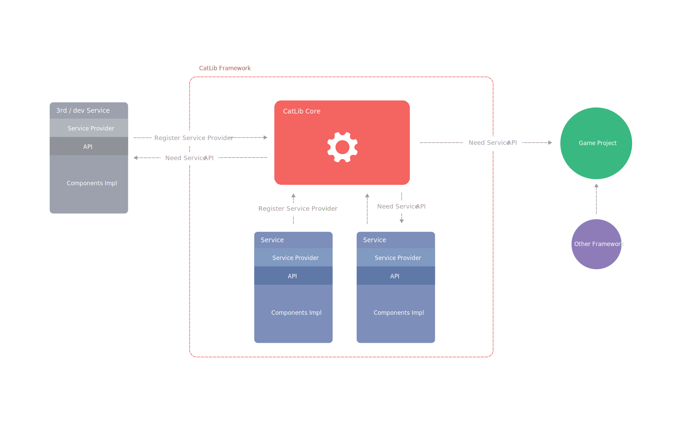

服务提供者
服务提供者是组件和CatLib联系的桥梁。同时也是CatLib启动的中心，所有的服务都是通过服务提供者定义的。
名词定义
组件组件与CatLib没有任何关系，她们可以独立的运行在不同的框架中。服务是由服务提供者将一个或者多个组件组合而成，一组可以被开发者使用的接口。
CatLib架构图

实现服务提供者
您的服务提供者类必须继承自CatLib.IServiceProvider类 , 所有的服务提供者包含 Register()和Init() 2个方法。
在Register()方法中，你唯一要做的事情就是绑定服务实现到服务容器，不要尝试在其中执行任何其它功能。因为很有可能你就使用了一个没有被注册的服务。
当服务提供者的Init()方法被触发时，就意味着框架所有的服务提供者的Register()都已经被执行，也就是说我们可以在Init()中访问其他服务提供者所提供的服务。
using CatLib; |
注册服务提供者
注册了服务提供者并不意味着服务都会被立即实例化，通常情况下很多是延迟实例化的，只有真的用到它们的时候才会实例化。
如果框架使用者想要使用某个服务，那么必须先对这个服务进行注册。
App.Register(new ConfigProvider()); |
初始化优先级
您可以通过配置启动优先级来调整服务提供者启动流程的启动顺序，注意CatLib中的所有的优先级特性都是采用就近原则的。即为函数标记的优先级特性将会优先于类的优先级特性。
using CatLib; |
关于更多优先级相关资料，请参考：优先级